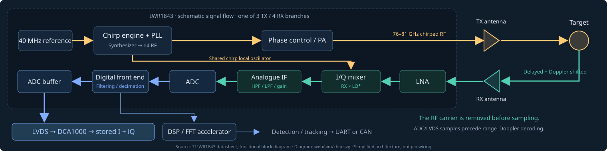

Inside the radar chip


The shared chirp oscillator removes the RF carrier in the analogue mixer. You capture complex baseband I + iQ through the ADC/LVDS path; object lists come from later digital processing.
Radar and target in 3D
Target marker enlarged; dimensions in metres
Playback shows target motion slowed for viewing.
Transmitted and received chirps
RF curves are instantaneous frequency, not sampled 80 GHz oscillations. Shading includes the ramp tail and idle time.
Instantaneous mixer frequency
fIF = −Sτ − [f₀ + S(u − τ)]τ̇. Approaching motion has positive carrier Doppler in this I/Q convention.
Complex voltage · I and Q
Relative amplitude ∝ 1/R², normalized to the return at 1 m for a fixed cross section. This is not calibrated volts or ADC counts. ADC-off gaps contain no samples.
Signed-frequency spectrogram
Each Hann-window STFT stays inside one chirp. Windows are never stitched across idle gaps. Zero-padding gives a smoother frequency grid; it does not improve resolution.
Equations, timing and receiver assumptions
Radar: (x₀, y₀). Target: (vt, 0). Instantaneous geometric range: R(t) = √[(vt − x₀)² + y₀²].
Retarded reflection: τ(t) = 2R(t − τ/2)/c. The model solves this delay, then uses φ = 2π[−f₀τ − Suτ + Sτ²/2], z = A(R)eiφ.
Global target time continues through the idle interval. Ramp-local u resets at each chirp. ADC starts at 0 µs and acquires 128 samples over 10.24 µs; the model adds a 0.37 µs ramp tail and 3.10 µs idle. This 13.71 µs repetition interval is inferred from the reader and remains a timing assumption.
The ideal view shows an unfiltered I/Q mixer sampled at 12.5 MS/s. The receiver view uses quasistatic 175/350 kHz high-pass filters and an ideal −10 to 0 MHz Complex-1x sideband mask. It is a teaching approximation, not the measured transient or digital-filter response. Digital samples wrap into ±6.25 MHz. Very fast motion can leave the hardware passband.
One isotropic point target, fixed cross section, no clutter or noise; no surveyed chamber geometry or calibrated receiver gain. Geometry and signal evolve together over all chirps. No extra signal or integration energy is inserted into padding.
Model: model.mjs, derived from the memo’s Equation 25 implementation. Chip architecture: TI IWR1843 datasheet, functional block diagram.